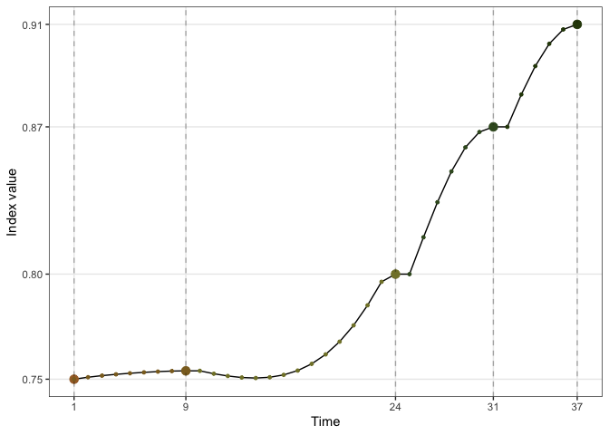
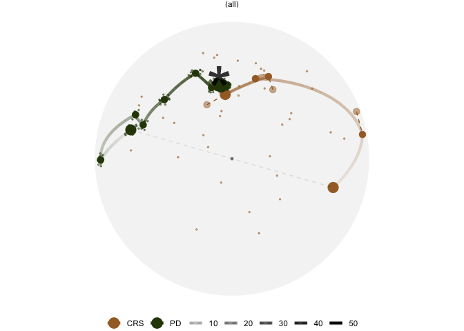

Given a data object collected from a (guided) tour, ferrn provides handy tools for extracting key components and produces diagnostic plots.
Installation
You can install the development version of ferrn from GitHub with:
# install.packages("remotes")
remotes::install_github("huizezhang-sherry/ferrn")Usage
The best projection basis found by the projection pursuit algorithm can be extracted via
library(ferrn)
library(dplyr)
holes_1d_better %>% get_best()
#> # A tibble: 1 x 8
#> basis index_val tries info loop method alpha id
#> <list> <dbl> <dbl> <chr> <dbl> <chr> <dbl> <int>
#> 1 <dbl[,1] [5 × 1]> 0.914 5 interpolation 8 search_bett… NA 71
holes_1d_better %>% get_best() %>% pull(basis) %>% .[[1]]
#> [,1]
#> [1,] -0.0004034938
#> [2,] 0.9907650777
#> [3,] -0.0565694324
#> [4,] 0.0900680757
#> [5,] 0.0840954161
holes_1d_better %>% get_best() %>% pull(index_val)
#> [1] 0.914266Trace plot for viewing the optimisation progression with botanical palette:
holes_1d_better %>%
explore_trace_interp() +
scale_color_botanical(palette = "fern")
Compare two algorithms via plotting the projection bases on the reduced PCA space:
bind_rows(holes_1d_geo, holes_1d_better) %>%
bind_theoretical(matrix(c(0, 1, 0, 0, 0), nrow = 5),
index = tourr::holes(), raw_data = boa5) %>%
explore_space_pca(group = method) +
scale_color_botanical(palette = "cherry")
#> Warning: The `x` argument of `as_tibble.matrix()` must have unique column names if `.name_repair` is omitted as of tibble 2.0.0.
#> Using compatibility `.name_repair`.
#> This warning is displayed once every 8 hours.
#> Call `lifecycle::last_warnings()` to see where this warning was generated.
View the projection bases on its original 5-D space via tour animation:
bind_rows(holes_1d_geo, holes_1d_better) %>%
bind_theoretical(matrix(c(0, 1, 0, 0, 0), nrow = 5),
index = tourr::holes(), raw_data = boa5)%>%
explore_space_tour(theoretical = TRUE, group = method, max_frame = 150)